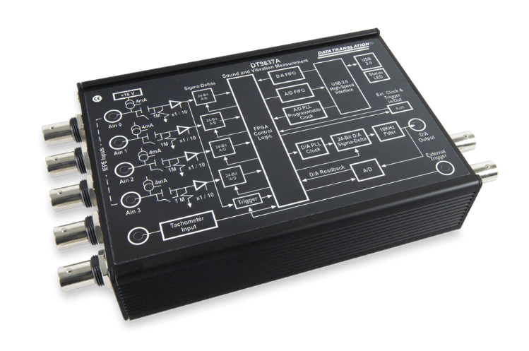
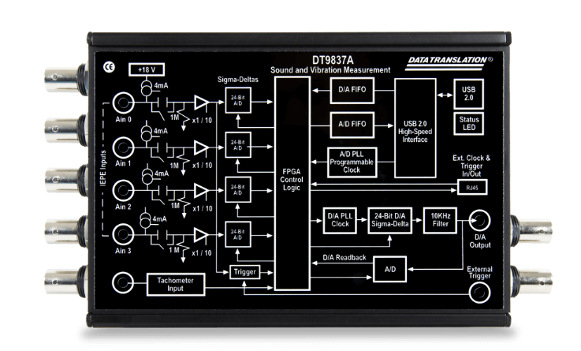
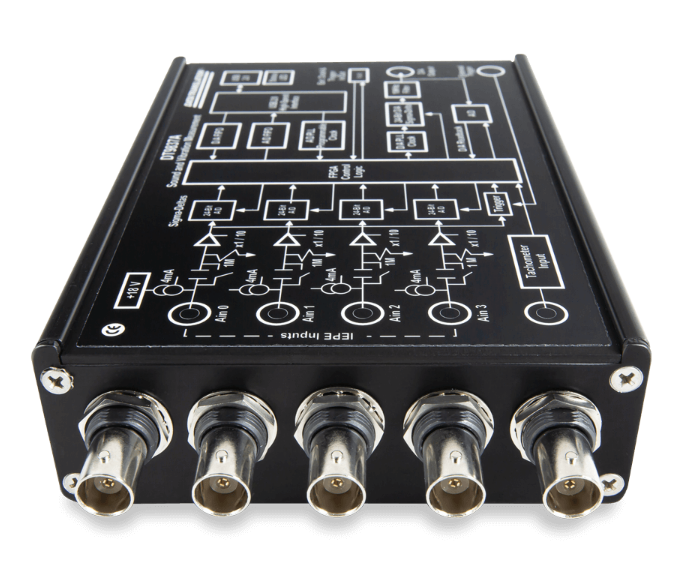
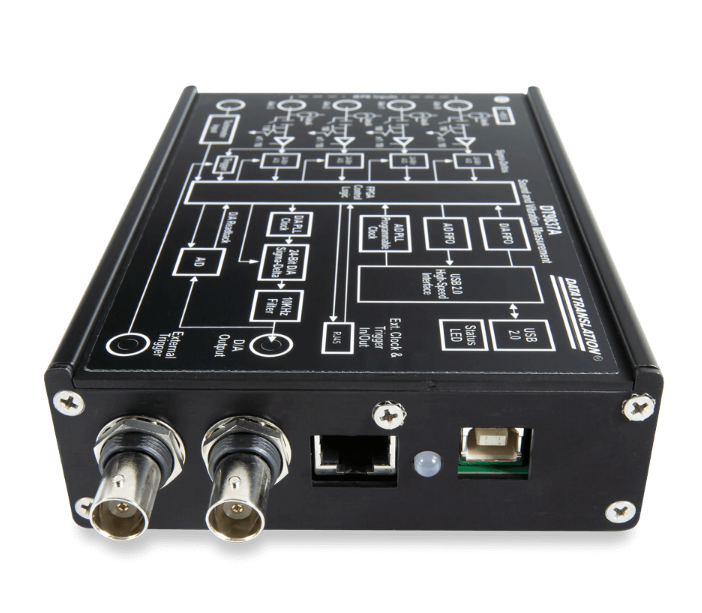
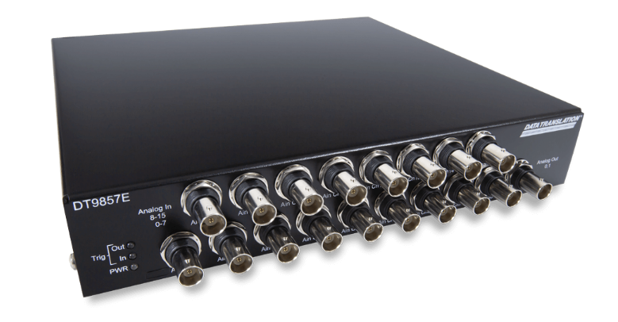
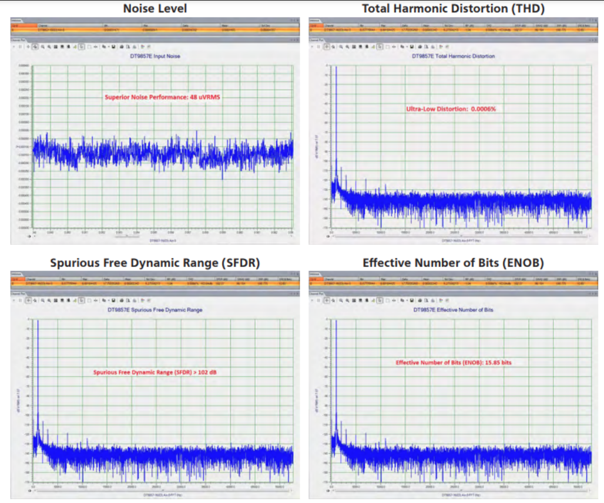
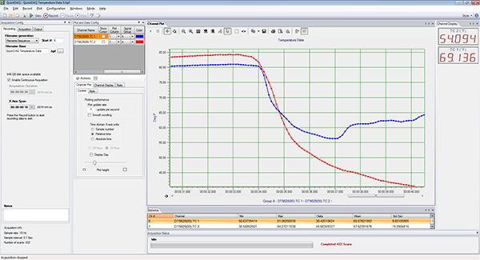
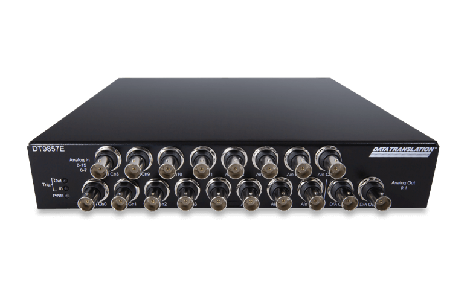
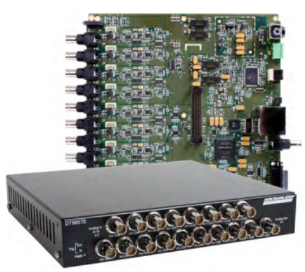

4채널 USB 기본형 DT9837부터, 8·16채널 구성에서 마스터/슬레이브 연동으로 최대 64채널까지 확장되는 DT9857E까지 — 씨앤디테크가 소개하는 진동·소음 측정용 데이터수집장치 라인업입니다.
DT9837·DT9857E는 IEPE(ICP®) 센서를 직접 연결해 진동·소음 신호를 취득하는 데이터수집장치(DAQ) 라인업입니다. 회전기계 상태 모니터링, 소음·진동 시험, 구조물 계측 등 채널 수와 현장 상황에 따라 휴대성 중심의 소형 기본형과 다채널 동시 계측이 가능한 확장형 중에서 선택할 수 있습니다.
씨앤디테크는 두 라인업 모두 공급하며, 측정 채널 수·샘플링 속도·소프트웨어 연동 환경에 맞는 최적의 구성을 상담해 드립니다.
| 구분 | DT9837 (기본형) | DT9857E (확장형) |
|---|---|---|
| 채널 구성 | 4채널 | 기본 8채널 / 16채널 |
| 최대 확장 | 단일 유닛 | 마스터/슬레이브 최대 4대 → 64채널 |
| 연결·전원 | USB 1개로 연결+전원 동시 지원 | USB 연결, OEM 보드·스틸케이스 제공 |
| 타코미터 입력 | 모델별 상이 | 1개(기본) / 32비트 회전속도계 지원 |
| 적합 용도 | 휴대용·소규모 현장 진동 측정 | 다채널 동시 계측, 정밀 시험·연구 |
DT9837은 4채널 IEPE 입력을 지원하는 소형 USB 진동 데이터수집장치입니다. USB 케이블 하나로 PC와의 데이터 통신과 전원 공급이 동시에 이루어져 별도의 전원 공급 장치 없이 바로 사용할 수 있습니다. 휴대성이 뛰어나 현장 출장 측정, 소규모 진동 진단, 간이 소음 측정 등에 적합합니다.




DT9837A 4채널 USB 진동 데이터수집장치 실물 사진
DT9857E는 기본 8채널 또는 16채널로 구성된 소음·진동 측정 전용 데이터수집장치입니다. 동시 24비트 IEPE 센서 입력, 최대 105.4kS/s/ch 샘플 속도, 1개의 타코미터 입력, 16개의 디지털 I/O를 지원합니다. 소음·진동 측정에 특화된 고정밀 다이나믹 IEPE 신호 컨디셔닝 기능을 갖추고 있으며, 센서 입력이 회전속도계 입력과 동기화되어 시간축이 일치하는 데이터 스트림을 얻을 수 있습니다.

| 센서 입력 | 8채널 또는 16채널, 동시 24비트 IEPE(ICP®) |
|---|---|
| 샘플 속도 | 최대 105.4kS/s/ch |
| 타코미터 입력 | 1개, 32비트 회전속도계 지원, 센서 입력과 동기화 |
| 디지털 I/O | 16개 |
| D/A 출력 | 최대 2개, 32비트 |
| 카운터/타이머 | 2개의 측정 카운터 및 범용 카운터/타이머, 전 채널 시간 동기화 |
| 연결 방식 | USB, OEM 제공 가능(보드 또는 스틸 케이스 모듈) |

마스터/슬레이브 연결로 최대 4대의 DT9857E를 연동할 수 있어, 최대 64채널의 IEPE 입력 채널과 최대 8채널의 아날로그 출력까지 확장이 가능합니다. 모든 데이터를 입력에 시간 동기화할 수 있는 하나의 데이터 스트림으로 취득합니다.

데이터 처리를 위한 기본 애플리케이션으로 데이터 로깅, 저장, 분석 및 신호 생성이 가능한 QuickDAQ가 포함되며, 업그레이드 시 FFT 분석 기능이 추가됩니다. 이 외에도 Visual C++®, Visual C#®, Visual Basic®.NET, DASYLab®, LabVIEW™, MATLAB® 등 널리 사용되는 프로그래밍 환경용 드라이버를 지원합니다.



DT9857E 제품 사진 — 정면 커넥터부 및 OEM 보드·스틸 케이스 모듈
씨앤디테크는 DT9837·DT9857E 외에도 휴대용 진동측정 시스템, 웹 기반 데이터수집장치, 고정밀 초고속 데이터수집장치까지 폭넓게 취급하고 있어, 측정 목적·채널 수·예산에 맞는 최적의 시스템을 제안해 드립니다.
관련 기술 자료 더 보기:
DT9837·DT9857E 진동·소음 데이터수집장치 관련 질문
필요 채널 수, 측정 대상(회전기계·구조물·소음원 등), 소프트웨어 연동 환경을 알려주시면 최적의 DAQ 구성을 제안해 드립니다. OEM(보드·스틸케이스) 옵션 및 채널 확장 상담도 가능합니다.